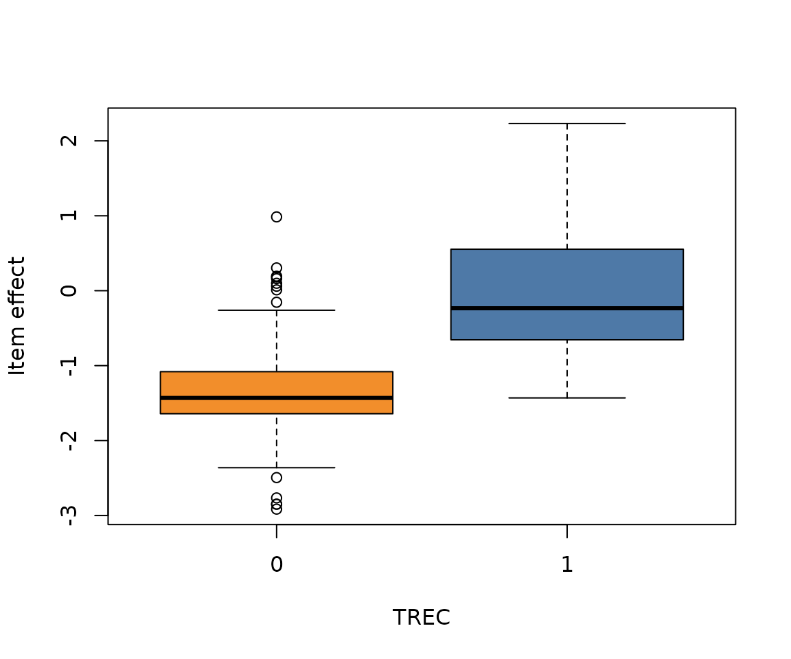

Analysing crowdsourced relevance assessments (Roitero et al. 2021)
Source:vignettes/roitero2021.Rmd
roitero2021.RmdThe data
The roitero2021 dataset is a subset of the crowdsourcing
experiment in Roitero et al. (2021), restricted to assessments collected
on the 100-point continuous (S100) relevance scale. Each row is one
worker’s relevance_score for one document_id
within a topic_id. The data are fetched on demand from the
upstream
repository.
roitero2021 <- download_roitero2021()
str(roitero2021)
#> 'data.frame': 56472 obs. of 11 variables:
#> $ topic_id : int 445 445 445 445 445 445 445 445 445 445 ...
#> $ unit_id : int 0 0 0 0 0 0 0 0 1 1 ...
#> $ document_id : chr "FT941-7858" "FT941-5312" "FT943-9241" "FT924-8156" ...
#> $ gold : chr "null" "null" "null" "H" ...
#> $ doc_pos : int 0 1 2 3 4 5 6 7 0 1 ...
#> $ worker_id : chr "gAAAAABgpOXVqNEjGuhKGPD07r9ZE4aIETRpKrbp78KF-qmEVxiruzngZVFS7Y8DuOGnqYngOpkQ-CtyeHxF6fZ_kiP-RCn9Gw==" "gAAAAABgpOXVqNEjGuhKGPD07r9ZE4aIETRpKrbp78KF-qmEVxiruzngZVFS7Y8DuOGnqYngOpkQ-CtyeHxF6fZ_kiP-RCn9Gw==" "gAAAAABgpOXVqNEjGuhKGPD07r9ZE4aIETRpKrbp78KF-qmEVxiruzngZVFS7Y8DuOGnqYngOpkQ-CtyeHxF6fZ_kiP-RCn9Gw==" "gAAAAABgpOXVqNEjGuhKGPD07r9ZE4aIETRpKrbp78KF-qmEVxiruzngZVFS7Y8DuOGnqYngOpkQ-CtyeHxF6fZ_kiP-RCn9Gw==" ...
#> $ relevance_score: num 100 60 0 100 75 0 0 0 98 0 ...
#> $ cumulative_time: num 49.1 72 33.9 26.9 55.2 ...
#> $ comment : chr "It's about women as priests in England, spot on." "A small part of the text is about it \"Women priests Saturday sees the first ordination in Britain of women pri"| __truncated__ "Nothing at all to be found." "Once again about female priests in England, completely relevant." ...
#> $ trec : int 1 0 1 1 1 0 0 0 1 0 ...
#> $ sormunen : int 2 NA 0 3 1 0 NA NA 1 0 ...For simplicity, here we focus on a single topic and look at how the related items were assessed.
We retain only workers who “correctly” responded to the gold items
(high-relevance "H" above threshold and non-relevant
"N" below threshold) and then keep only non-gold items.
select_workers <- intersect(
unique(topic[topic$relevance_score > 50 & topic$gold == "H", ]$unit_id),
unique(topic[topic$relevance_score < 50 & topic$gold == "N", ]$unit_id)
)
topic <- subset(topic, unit_id %in% select_workers & gold == "null")
nrow(topic)
#> [1] 2196As scores were collected on a 0-100 scale, we map them onto
[0,1] by dividing by 100. To build a
rating_data object we use the rating_data()
function. Since exact 0s and 100s are present in the data, the function
automatically detects the inflated beta ratings.
ratings <- topic$relevance_score / 100
items <- as.integer(factor(topic$document_id))
rd <- rating_data(ratings, items)
rd
#> - Data type: inflated
#> - Inflation: zeros = 38.3% / ones = 7.6%
#> - Items: 251 ( 2 degenerate )
#> - Average budget per item: 8.75
#> - n: 2196As printed, the checks detected two degenerate items. These correspond to documents where the same value is given by all raters
degen_docs <- levels(factor(topic$document_id))[rd$degen_ids]
d <- subset(topic, document_id %in% degen_docs, select = c(document_id, relevance_score))
d[order(d$document_id), ]
#> document_id relevance_score
#> 115931 FR941121-0-00035 0
#> 116340 FR941121-0-00035 0
#> 116533 FR941121-0-00035 0
#> 116795 FR941121-0-00035 0
#> 117104 FR941121-0-00035 0
#> 117660 FR941121-0-00035 0
#> 117872 FR941121-0-00035 0
#> 118732 FR941121-0-00035 0
#> 118929 FR941121-0-00035 0
#> 115886 LA013190-0096 0
#> 116191 LA013190-0096 0
#> 116685 LA013190-0096 0
#> 117054 LA013190-0096 0
#> 117096 LA013190-0096 0
#> 117619 LA013190-0096 0
#> 118195 LA013190-0096 0
#> 118406 LA013190-0096 0Fitting the agreement model
The inflated interval model is a one-way model: the item effects are
profiled out as nuisance parameters. The argument
METHOD = "modified" denotes that the modified profile
likelihood is used for estimation
fit <- agreement(rd, NUISANCE = "items", METHOD = "modified")We can extract estimated coefficients with the familiar
coef() method
coef(fit)[1:10]
#> phi k0 k1 alpha_1 alpha_2 alpha_3 alpha_4
#> 2.6944238 -1.3789283 2.3437713 0.4646532 0.9665874 1.9666077 -0.9659125
#> alpha_5 alpha_6 alpha_7
#> -0.8590840 -1.1937944 -0.2065705where alphas for degenrate items are reported with infinite values
The confint() method returns the confidence intervals
for parameter estimates (phi, k0,
k1) as well as for agreement. For the latter, intervals are
constructed via the delta method
confint(fit)
#> $parameters
#> Estimate Std. Error 2.5 % 97.5 %
#> phi 2.694424 0.10667435 2.485346 2.903502
#> k0 -1.378928 0.06127626 -1.499028 -1.258829
#> k1 2.343771 0.09483957 2.157889 2.529653
#>
#> $agreement
#> Estimate Std. Error 2.5 % 97.5 %
#> agreement 0.4765281 0.01341449 0.4502362 0.5028201Item effects
The original data also contain TREC labels, which correspond to evaluations given by experts on a binary scale (relevant = 1 / non-relevant = 0). We can plot the estimated vector to visualise how the model captured the different relevance levels across items
doc_levels <- levels(factor(topic$document_id))
alphas <- coef(fit)[grep("^alpha", names(coef(fit)))]
trec <- tapply(topic$trec, topic$document_id, function(x) x[!is.na(x)][1])
boxplot(
alphas ~ factor(trec[doc_levels]),
xlab = "TREC",
ylab = "Item effect",
col = c("#F28E2B", "#4E79A7"))
#> Warning in bplt(at[i], wid = width[i], stats = z$stats[, i], out =
#> z$out[z$group == : Outlier (-Inf) in boxplot 1 is not drawn
p_degen <- confint_prob_degenerate(fit)
plot_prob_degenerate(fit)